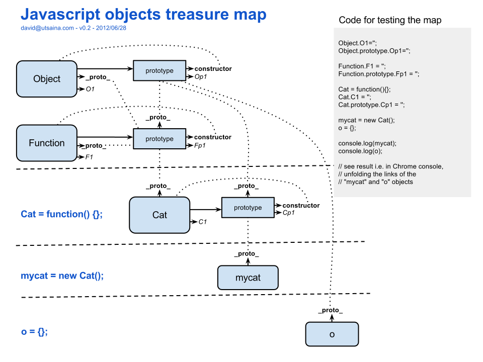

现在开始
私藏的JS武功秘籍，修炼之后从此纵横江湖难觅敌手，欲练神功。。。
私藏的JS武功秘籍，修炼之后从此纵横江湖难觅敌手，欲练神功。。。
客户端Javascript的运行环境就是浏览器，浏览器几乎就是一个迷你的OS。作为脚本语言，解释运行的Javascript是不需要代码人员使用编译器，写出来的代码就能立刻见到结果。
Javascript的调试是相对比较简单的，现代的浏览器一般都包含开发人员工具，浏览器缓存残留是比较常见的调试问题，在调试的时候切记缓存是否已经清理。
通用的调试方法包括直接观察运行结果，给语句加断点等等，或者：
alert(foo); console.log(bar);
这章介绍一下数据类型和变量。Javascript是弱类型语言意味着变量可能会随着程序的运行改变其类型。Javascript中的原始类型有：
除了以上这些其它的类型都是对象。
/*整数*/ 0 3 1000000 0xff //十六进制(dec:255) 0377 //八进制(dec:255)
一定要注意浮点数的四舍五入错误：
(0.3 - 0.2 - 0.1) == 0 //=>false (1 - 0.5 - 0.5) == 0 //=>true
解决办法：在这些需要精确数值的地方使用整数。
使用单引号或双引号对包括起来就能够成一个字符串。字符串最常用的操作就是拼接了，和Java一样使用“+”即可联结两个字符串，由于Javascript是弱类型语言，通常出现的问题就是将字符串的拼接和数字的加法运算混淆，这里尤其需要注意操作变量的数据类型。
令一个常见问题是就是引号嵌套的错误，导致代码解释时字符串提前终止，这里的解决方法是使用不同的引号对或者转意字符。
1 + 2 // =>3 1 + "2" // =>"12" var s = "foo"bar""; // 错误 var s = "foo\"bar\"";
关于字符串系统内置有五花八门的方法，这些都可以通过查阅手册得到，这里就举两个常用的；通俗的说字符串就是字符组成的数组，有很多字符串的方法也会在数组中看到。
var s = "hello world"
s.length // =>11
s.split(" ") // => ["hello", "world"]分割字符串
//undefined 一般代表未定义的值，经常是在判断某些错误时 //null 一般是程序员主动赋予的，代表一些没意义的值 undefined == null // => true undefined === null // => false undefined == 0 // => false 条件判断语句判断值的真假，但不表示undefined和0这两个假值就是相等的 1/0 // => Infinity 在Javascript中0作为除数并不会报错，而是返回Infinity或者-Infinity -1/0 // => -Infinity 0/0 // => NaN typeof NaN // => "number" NaN == NaN // false 这个是个比较有趣的返回值
这里阐述一下我的理解。变量的值包含两种，前面提到过：原始值和对象。原始值不会给我们造成什么困惑，然而当变量的值是一个对象时，变量其实是指向该对象的一个引用：
var arrayA = [1, 2, 3],
arrayB = arrayA,
arrayC = [1, 2, 3];
arrayA.pop();
console.log(arrayA); // [1, 2]
console.log(arrayB); // [1, 2]
console.log(arrayC); // [1, 2, 3]
对象的比较和原始值的比较不同，它只判断作比较的对象是否为同一个对象
var arrayA = [1, 2, 3],
arrayB = arrayA,
arrayC = [1, 2, 3];
arrayA == arrayB // =>true
arrayA == arrayC // =>false
//数组也是一种对象
var o = {x: 1, y: 2},
b = {x: 1, y: 2},
j = o;
o == b // =>false
o == j // =>true
要点：
我们来看看表达式的解析过程，我们拿个简单的例子:
foo = (1, 2 + 3 + (0 == 1));
根据计算顺序首先会得到表达式"1"的值；
同理得到"2"和"3"的值；
加号操作符(exp1 + exp2)从左到右计算两个值为数字表达式之合, 得到"2 + 3"的值5；
括号内的表达式会优先计算所以比较操作符"=="计算得到(0 == 1)的值为false；
加号操作符计算左右两个表达式的和值，这里体现出了Javascript的弱类型特性， false被隐性转化成数字0值：2 + 3 + (0 == 1) 得到5；
逗号操作符(exp1, exp2)会按从左到右的顺序计算表达式的值然后抛弃第一个表达式的值，所以(1, 2 + 3 + (0 == 1))的值是5；
赋值操作符(exp1 = exp2)会计算第二个表达式的值作为整个表达式的值，同时它的副作用将右边表达式的值赋予左边的表达式(左边表达式必须为一个左值:变量名)，所以foo被赋予了值"5"，同时整个表达式的值是5，在执行完这条语句之后表达式的这个5将被丢弃；
错误的使用带副作用的操作符会让我们造成一些bug。
不过利用带副作用的表达式我们也可以写出一些比较简洁的语句。
function factorial (n) { // n > 0
var result = 1;
while (result*=n--, n > 1) {
//empty loop
}
return result;
}
关于运算符这里直接摘抄一个现成的表格
| 优先级 | 运算符 | 描述 | 结合性 |
| 由高到低排序 | () | 括号 | 从左到右 |
| ++ -- | 递增或递减 | 从右到左 | |
| ! | 逻辑非 | 从右到左 | |
| * / % | 乘法、除法、取模 | 从左到右 | |
| + - | 加法、减法 | 从左到右 | |
| + | 拼接 | 从左到右 | |
| < <= | 小于、小于等于 | 从左到右 | |
| > >= | 大于、大于等于 | 从左到右 | |
| = = != | 等于、不等于 | 从左到右 | |
| = = = != = | 等同（类型相同）、不等同 | 从左到右 | |
| & | 按位与 | 从左到右 | |
| | | 按位或 | ||
| ^ | 按位异或 | ||
| ~ | 按位非 | ||
| << | 按位左移 | ||
| >> | 按位右移 | ||
| >>> | 按位右移，左边以0填充 | ||
| && | 逻辑与 | 从左到右 | |
| | | | 逻辑或 | 从左到右 | |
| ?: | 三元条件表达式 | 从右到左 | |
| = += -= *= %= <<= >>= | 赋值 | 从右到左 |
流程语句对于习惯C妈妈一家子的编程小伙伴们来说是再熟悉不过的了在此就不啰嗦了，JavaScript里的控制语句也不外乎那几种：
先说一个比较容易犯错的语句switch
switch (num) {
case 1: //这一段是比较标准的写法，每个case结尾都用break语句结束
console.log(num);
break;
case 2: //在这段语句中没有break语句
console.log(num); //当num为2时不仅会执行这句，还会执行case 3下面的语句直到break
case 3:
console.log(num);
break;
case 4: //利用这种特性我们更多会用这种写法
case 5:
console.log(num);
default:
//default部分的语句在以上值都不符合的时候执行，一般用来处理异常值
}
这里再提一个for循环的特例，在Javascript比较实用的用法
var obj = {x: 1, y: 2, z: 3};
for (var p in obj) {
console.log(p + "=" + obj[p]);
}
//这里要注意定义的变量p是一个字符串, obj.p就取不到了。
一般我们提到的对象，都包含属性和方法。由于在Javascript中，方法，也就是函数本身也是一类对象，即一种数据类型。因此简单描述Javascript对象的话，它们就是一种属性名/值的无序集合。
利用对象我们可以创造和模拟许多复杂的数据结构以满足我们的应用需求，简单对象的创建方法：
var obj = {x: 1, y: 2}; //JSON
var o = new Object(); // o的值即{}
function dog(name, breed) { //简单的构造函数
this.name = name;
this.breed = breed;
}
var Tom = new dog("Tom", "chiwawa"); // dog {name: "Tom", breed: "chiwawa"}
数组是一类特殊的对象：
数组的值是有序集合。每一个值叫做一个元素。每个元素在数组中有个位置，以数字表示，称为索引。Javascript的数组是动态的，可以增长缩减，数组元素的数据类型是不固定的，甚至一个数组可以包含不同类型的元素，同时它可以是稀疏的。
var a = []; // 空数组
a = new Array(); //同上
a[1] = 1; //给第二个元素赋值1
alert(a[0]); // undefined
alert(a.length); // 2
a[0] = {x:1};
console.log(a); // [Object, 1]
var b = [1, 2, 3];
b[0]; // => 1
b.length; // => 3
b[2] = undefined;
b[1] = null;
b; // => [1, null, undefined]
b.length; // => 3
数组还包括强大的内置方法，能帮助我们直接实现一些简单的数据结构，数组在Javascript编码中是非常常用的工具。
比如利用push()和pop()方法可以将数组当栈使用：
var a = [1, 2, 3]; a.pop(); // => 3 a; // => [1, 2] a.push(4); a; // => [1, 2, 4]
splice()方法可以对数组进行裁剪，也是相当实用的方法：
var a = [1, 2, 3, 4, 5, 6, 7, 8]; //splice()方法返回被裁减的部分，原数组被修改 a.splice(4); // 返回[5, 6, 7, 8], a是[1, 2, 3, 4] a.splice(1, 2); // 返回[2, 3], a是[1, 4] a.splice(1, 1); // 返回[4]，a是[1]
this在javascript中是个重要的关键字同时也是很容易犯错的点。
但是总结下来也是很简单的，this的指向只有三种情况:
function foo() {
function bar() {
console.log(this);
}
console.log(this); //window
bar(); //window
}
var obj = {
a: function() {
function b() {
console.log(this);
}
b();
console.log(this);
}
};
obj.a(); //先window后obj
<button onclick="alert(this);"></button>
//HTML object
要理解Javascript的函数少不了对闭包的认识。然而在提闭包之前不得不先阐述变量的作用域。
Javascript只有两种变量作用域：全局变量拥有全局作用域；局部变量只在函数内部有定义。简单的说就是里面能看到外面，外面看不到里面: )
var scope = "global";
function checkscope() {
var scope = "local"; // 这里var声明局部新变量，否则将修改全局变量
//在函数中遗漏关键字var而修改全局变量是个很常见的错误!!!!!!!!!
return scope;
}
scope; // => "global"
checkscope(); // => "local"
声明提前：在函数体里声明的变量，实际都被提前至(未赋值)函数的顶部。
var scope = "global";
function checkscope() {
alert(scope); //将输出undefined
var scope = "local";
alert(scope); //"local"
}
checkscope();
//以上代码事实上等价于：
var scope = "global";
function checkscope() {
var scope;
alert(scope);
scope = "local";
alert(scope);
}
checkscope();
现在我们可以谈闭包了：(百科上的解释比较抽象：闭包是引用了自由变量的函数。这个被引用的自由变量将和这个函数一同存在，即使已经离开了创造它的环境也不例外。所以，有另一种说法认为闭包是由函数和与其相关的引用环境组合而成的实体。闭包在运行时可以有多个实例，不同的引用环境和相同的函数组合可以产生不同的实例。)
下面举个实际的例子：
//最简单的闭包实现
function createCounter() {
var num = 1;
function c() {
return num++;
}
return c;
}
var counter = createCounter();
counter(); //=>1
counter(); //=>2
counter(); //=>3
var counter2 = createCounter();
counter2(); //=>1
闭包和this
this关键字在Javascript中相当常用，在客户端中，作为对象的方法this指向方法挂载的对象本身，在一般函数或者全局中this都指window对象，特殊的，注册事件函数的this指向触发事件的DOM对象。举个例子：
var data = [{name: "a", value: 111}, {name: "b", value: 222}, {name: "c", value: 333}];
Object.prototype.createButton = function (i) {
var that = this; //这是利用闭包保留对象this引用的常见手段，因为在事件注册程序中this指向DOM元素本身
$button = $("<button>" + this.name + "</button>").appendTo($("body")).click(function () {
alert(this); //[object HTMLButtonElement]
alert(that.value);
alert(i);
});
return $button;
}
for (var i = 0; i < data.length; i++) {
data[i].createButton(i);
}
Javascript和其它语言相比最古怪的地方就在于继承方式了。不同于一般面向对象语言使用类(class)，Javascript中就没有类，而是使用原型(prototype)的方式实现继承，对于初学Javascript的小伙伴们来说这个是比较容易产生困惑的。
虽然不是每个前端“玩家”都会使用到原型，但是我认为掌握至少是认识prototype是非常有必要的。
有时候觉得千言万语不如一张图，找到了stackoverflow上的一张神图，非常犀利得阐述了原型链的运作方式：

上面的三个大圆角矩形都是构造函数，而mycat和o则是对象，其它的则是prototype对象。用new关键字调用构造函数，我们创建了一个对象，构造函数中的this将指向构造出的对象本身，通过this.propertyName的方式可以给对象附加属性和方法。同时对象的原型：__proto__(为了便于理解用这个概念，是在firefox等一些浏览器可以访问到的内部属性，编写代码时强烈不建议用这个)则是构造函数的prototype, 当调用的对象找不到某个对应属性或方法时，回去找它的__proto__是否包含，若是没有，会一直向原型链上寻找直到null为止。如：
调用var obj = {x: 1}的toString()方法，obj本身没有这个方法, 于是访问obj.__proto__也就是Object.prototype，其中有内置的toString方法。
Object.prototype.__proto__指向null，这个是原型链的终点。
这样我们就可以做一个简单继承范例了：
function Person (name, age) {
this.name = name;
this.age = age;
}
Person.prototype = {
constructor: Person,
eat : function () {
alert("happy!");
},
sayHello: function () {
console.log("My name is " + this.name + "!");
}
};
function Employee (name, age, salary) {
this.salary = salary;
Person.call(this, name, age);
}
Employee.prototype = new Person();
Employee.prototype.constructor = Employee;
Employee.prototype.showSalary = function () {
console.log("My salary is " + this.salary + "yuan !");
};
var Tom = new Employee("Tom", 99, 1);
国内许多所谓的速成宝书都喜欢在jQuery库上扯很多废话，其实关于jQuery的特性上我不想太啰嗦，因为库本身的作用就是用来帮助我们简化工作的复杂性的，我们不应该在某一个库上浪费太多学习时间上的成本。jQuery是本着"write less, do more"的思想上设计的，其核心在于解决浏览器的兼容性，在性能上的优化，以及提供功能强大的选择器简化我们的开发。
让我们直奔主题，要理解jQuery，首要的应该是去理解jQuery的架构思想：
有前面Javascript基础知识的话，要理解这些代码并不困难。这里把jQuery库的构造简化了一下便于理解，现在新版本的jQuery能支持AMD的模块化设计，虽然具体代码会有些差别，但是整体上的思路还是大同小异的
//这里首先采用了一个匿名函数的调用，保证库中定义的变量不会污染全局的命名空间，这是一般js库的常用写法
(function (window) {
//首先jQuery是个工厂函数，它返回一个对象
var jQuery = function (selector, context) {
return new jQuery.fn.init(selector, context);
};
//在这里定义了jQuery.fn来保存jQuery对象的各种方法
jQuery.fn = jQuery.prototype = {
constructor: jQuery,
init: function (selector, context) {
// 初始化的各种代码
return jQuery.makeArray( selector, this );
//这里我想指出，jQuery对象其实是一个类数组对象，它在形式上像一个数组数组
},
//以及各种jQuery对象的方法
each : function () {},
ready : function () {},
eq : function () {},
first : function () {},
last : function () {},
slice : function () {},
map : function () {},
end : function () {},
};
//将jQuery.fn.init.prototype的引用指向jQuery.fn，因此jQuery对象都拥有相同的prototype能调用jQuery.fn中的所有方法
jQuery.fn.init.prototype = jQuery.fn;
jQuery.extend = jQuery.fn.extend = function() {
//jQuery对象扩展工具方法方法的实现
}
jQuery.extend({
//再将其它各种jQuery工具函数也扩展到jQuery函数对象上
noConflict : function () {},
ready : function () {},
isArray : function () {},
isWindow : function () {},
isNumeric : function () {},
type : function () {},
isPlainObject : function () {},
});
//最后将jQuery( $ )的函数定义挂载到全局的window对象
window.jQuery = window.$ = jQuery;
})(window);
jQuery对象就是通过调用$()或者jQuery()返回的对象。
分析过jQuery的源码我们知道jQuery本身是一个工厂函数，调用它会返回一个对象，而这个对象是一个类数组对象，它模拟了数组的特性(比如包含数字索引、length属性等)，所以我们调用jQuery函数返回的对象会以如下形式呈现：
//jQuery对象中的元素可以是HTML的节点元素，也可以是Javascript对象(包括数组)。
$("div");
=>[<div>...</div>, <div>...</div>, <div>...<div>]
var obj = new Object();
$(obj);
=>[Object]
当选择器没有选择到匹配HTML元素时jQuery返回空的jQuery对象: []
所以我们要明白一点，jQuery对象的所有方法都是针对对象所包含的集合进行操作的，且jQuery对象不是HTML节点元素：
//若HTML页面有唯一一个id为"foo"的div元素
$("#foo") == document.getElementById("foo") // => false
$("#foo")[0] == document.getElementById("foo") //=> true
将HTML元素和jQuery对象混淆是初学易犯的错误之一，所以为了便于区分我们鼓励使用在jQuery对象前加上$符的命名规范：
var $body = $("body");
通常我们可以向jQuery工厂函数传入一个字符串，jQuery将根据字符串提供的信息选择出页面中符合条件的DOM元素并包含到返回的jQuery对象中。这里列举一些常用的jQuery选择器：
$("#elementId") //选择id值为elementId的元素，页面中id对应的元素应当是唯一的
$("div") //选择所有的div标签元素
$(".elementClass") //选择class属性为elementClass的所有元素
$("*") //选择文档中的所有的元素
$("form input") //选择所有的form元素中的input元素
$("#main > *") //选择id值为main的所有的子元素
$("tr:first") //选择所有tr元素的第一个
$("tr:last") //选择所有tr元素的最后一个
$("div[id]") //选择所有含有id属性的div元素
$("input[name='newsletter']") //选择所有的name属性等于'newsletter'的input元素
//注意这种情况不是选择器的使用，而是创建一个新的DOM元素并返回包含其的jQuery对象
$("<div></div>")
这里额外提一个会一起用到的jQuery对象方法
$("div").find("p") //选择div元素下的所有p元素
jQuery对象有很多方法，将HTML元素用jQuery对象包装之后，我们可以不花太多精力在兼容性问题上而是直接调用jQuery对象提供的方法来对DOM元素进行操作。
下面是一些常用的jQuery方法：
//修改样式class
$("#element").addClass("foo");
$("#element").removeClass("foo");
$("#element").hasClass("foo"); //判断是否包含class foo
//属性修改
$("#element").attr("foo"); //返回属性foo的值
$("#element").attr("foo", "123"); //修改属性foo的值
$("input#element").val(); //获取input框的value值
$("input#element").val("123"); //修改input框的value值
$("#element").html(); //获得该元素内的内容
$("#element").html("123"); //获得该元素内的内容
$("#element").empty() //将该元素的内容设置为空
$("#element").text(); //获得该元素内的文本
$("#element").text("123"); //获得该元素内的文本
//DOM操作
$("#element").append($("#element1")); //$("#element1")将作为$("#element")的字元素 返回$("#element")
$("#element").appendTo($("#element1")); //$("#element")将作为$("#element1")的字元素 返回$("#element")
$("#element").remove();
//事件调用
$("button").click(function() {alert(this);});
$(document).ready(function() {}); //页面加载完成时调用函数
//特殊地，$(document).ready()我们可以简写成下面的形式
$(function () {
//code
});
关于jQuery一开始我们就把源代码拆开来分析过了, jQuery对象的所有方法都继承自jQuery.fn，所以扩展jQuery对象的插件形式：
(function ($) {
$.fn.yourFnName = function () {
//your code
};
})(jQuery);
//或者
(function ($) {
$.fn.extend({
yourFnName: function () {
//your code
}
});
})(jQuery);
//两种写法本质没有太大区别
一个简单的例子：
(function ($) {
$.fn.alertId = function () {
alert(this.attr("id") || "I have no Id!"); //this是调用这个方法的jQuery对象
};
})(jQuery);
jQuery提供了额外一组工具函数，这些函数不是jQuery对象的方法都是独立的函数。(它们作为jQuery函数对象的一个属性这样不会影响全局命名空间)
用得比较多的jQuery工具函数比如类型检测的$.isNumeric(), 扩展对象的$.extend(), 还有就是非常重要的Ajax工具了：$.ajax(),$.post(),$.get()等等
jQuery工具函数直接储存在jQuery函数对象的命名空间下，一般我们的插件写法：
(function ($) {
$.yourFnName = function () {
//your code
};
})(jQuery);
//或者
(function ($) {
$.extend({
yourFnName: function () {
//your code
}
});
})(jQuery);
因为兼容性的解决方案，我们经常使用jQuery提供的Ajax工具来解决前台和后台传输数据的需求。
先来看一个完整版的工具$.ajax()
$.ajax(json)函数需要一个传入一个对象，这个对象包含若干个参数, 如下：
$.ajax({
type: "GET", //发送请求的类型
url: "test/test.php",//发送请求的地址
data: {x:1, y:2}, //需要传输的数据在这里, data要求为字符串或者对象类型
dataType: "json", //现在小伙伴们比较流行用'json', 其它还有'xml'等许多格式
success: function(data) {}//请求成功后的回调函数, data是服务器的返回信息
});
其它还有一些参数详细的可以直接查看jQuery的文档。关于ajax的机制这里就不赘述，只要记住这个请求是异步的，这也就意味着这个ajax请求函数调用好之后就立刻执行下一步语句了，一般来说此时请求的执行还没有完毕。如果接下来的逻辑中有依赖请求答复的数据程序就无法正确执行，请务必把这些逻辑写在回调函数中。
再描述一个我们常用的简单版的ajax函数, 可以只加入三个参数，url, 请求数据和回调函数:
$.post("ajax.jsp", {"data": "request"}, function (data) {
//回调
});
在这里我觉得强调代码规范的重要性比描述具体的代码规范本身更重要了。这里一定要清楚一个本质，代码不仅是给机器解析的，更是给人阅读的，给别人，也可能是将来的自己。前端的代码比起后端更加凌乱而逻辑分散，所以好的代码规范就更加重要了。
正确的换行：不要有多余的换行，声明区域和算法区域空行，不同逻辑的代码块间空行。
合理的命名规范：变量的名称不是越简单越好，应当是在保证意义明确不会有歧义的基础上尽可能的简洁。真正做到代码的自注释(Self-Documenting Code)。
注释也不是越多越好，好的注释应该是概括地描述一个方法，构造对象或者一段算法的意图，而不应该像英语会话书那样的一句一句翻译。
JS目前统计下来比较通用的代码规范：更多的规范可以去找度娘